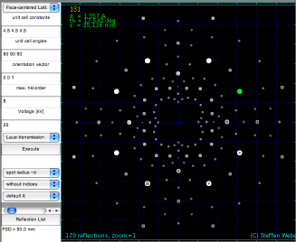

Laue diffraction is most often used for mounting single crystals in a precisely known orientation, for example for polishing a surface or for doing measurements. When the incoming beam is parallel to a high-symmetry direction of the crystal, the Laue pattern also has high symmetry. In cubic crystals, an incoming beam parallel to one of the unit cell edges (a <001> direction) produces Laue patterns with 4-fold symmetry. An incoming parallel to the body diagonal of the unit cell produces a 3-fold symmetrical pattern of Laue spots.
In most applications only the symmetry of the Laue pattern is used. In this lab we will also assign the Laue spots to the crystal planes that give rise to them. We will also determine the wavelength of the Laue beams, and check if this is consistent with the high voltage on the x-ray anode.
The figure shows an XZ-plane of a simple cubic crystal. Planes parallel to the Y-direction are perpendicular to the plane of the drawing. A polychromatic x-ray beam enters the crystal along the Z-direction [001]. The beam reflects off the (201) planes, which are perpendicular to the [201] direction. Constructive interference of wavelengths that satisfy the Bragg condition will give rise to the indicated Laue beam, which produces a spot on the film.
The direction of this beam is found by geometry - it does not depend on the lattice constant. The glancing angle of the incoming beam with the reflecting set of planes is given by the inner product of the normalized direction vectors:
As indicated in the figure, this gives that the angles of the diffracting (201) planes and the incoming and transmitted beam are both equal to 26.6°. Also the angle of reflection must be equal to the angle of incidence. Taken together, we find an angle of 53.2° between the Laue beam and the x-rays that go straight through the crystal.
|  |
The wavelength of a diffracted beam needs to satisfy the Bragg condition. The grazing angle of incidence is given by formula(1), in our case 26.6°. The distance between the planes is calculated from the indices assigned to a Laue beam and the lattice parameter of the cubic crystal: Steffen Weber's Laue applet gives both these numbers when you click on a spot. Unfortunately, the applet cuts off att 25°, so that 201=402=603 and equivalent spots are just outside the applet's "film area". |